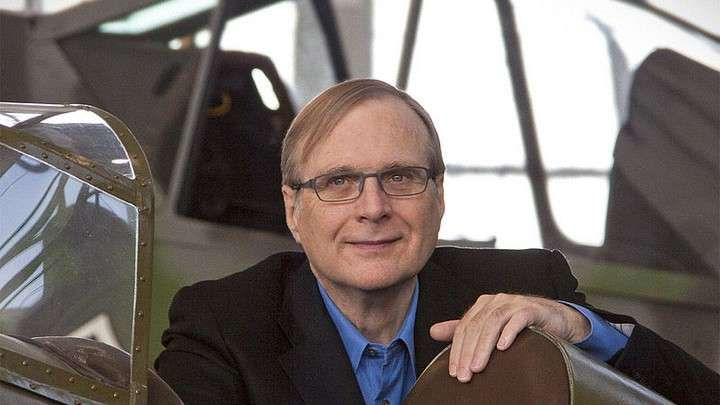
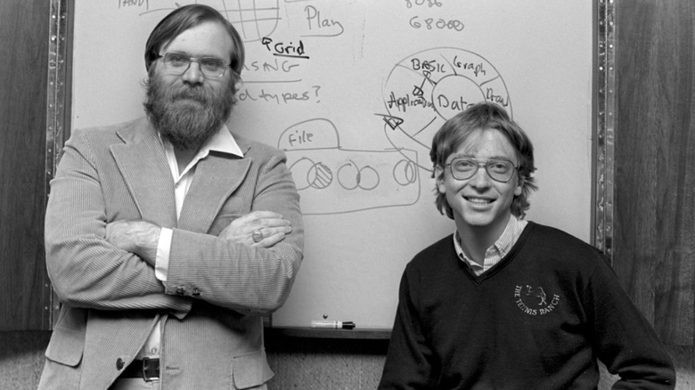
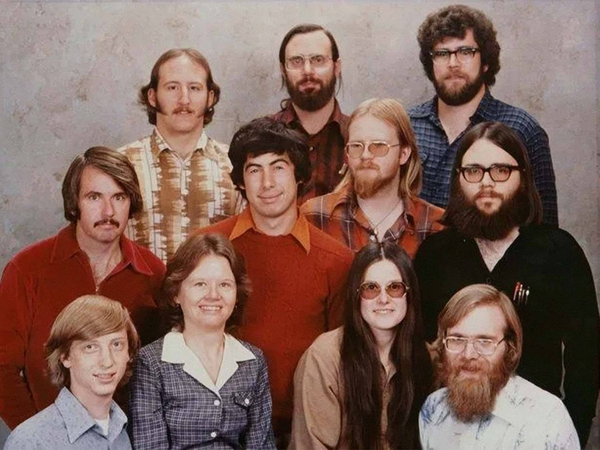

Microsoft была основана в 1975 году двумя талантливыми программистами — Биллом Гейтсом и Полом Алленом. Их главной целью было сделать компьютеры доступными для каждого человека, и именно это видение стало основой будущего успеха компании.

Билл Гейтс — американский программист, предприниматель и один из основателей Microsoft. Он начал программировать ещё в подростковом возрасте и в 1975 году вместе с Полом Алленом создал компанию, которая впоследствии стала крупнейшим разработчиком программного обеспечения в мире. :contentReference[oaicite:0]{index=0}
Пол Аллен — сооснователь Microsoft и один из ключевых людей в развитии персональных компьютеров. Именно он предложил идею создания программного обеспечения для первых микрокомпьютеров, что стало отправной точкой для основания компании.


В начале своего пути Microsoft состояла из небольшой команды энтузиастов. В 1978 году была сделана одна из первых фотографий сотрудников компании, которая показывает, насколько небольшой была команда на старте.
Основатели сделали ставку на разработку программного обеспечения, а не на создание компьютеров, что позволило Microsoft стать лидером индустрии и сотрудничать с крупнейшими производителями техники. :contentReference[oaicite:2]{index=2}
| Имя | Роль | Вклад |
|---|---|---|
| Билл Гейтс | CEO | Развитие Windows и стратегии компании |
| Пол Аллен | Сооснователь | Технические идеи и запуск компании |
| Сатья Наделла | CEO | Развитие облачных технологий |
Благодаря этим людям Microsoft стала одной из самых влиятельных компаний в мире технологий. Их идеи и разработки продолжают менять цифровой мир и сегодня.